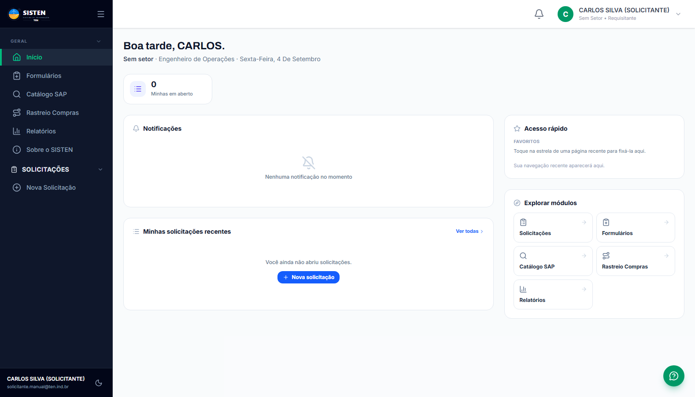
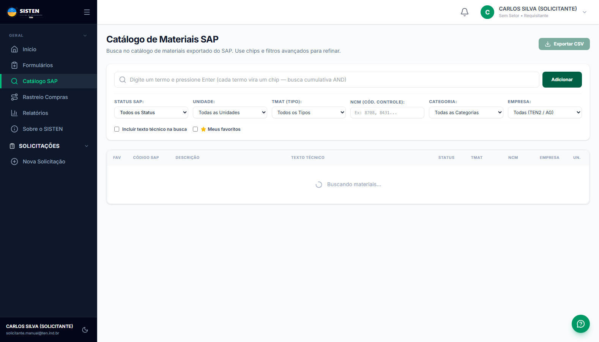
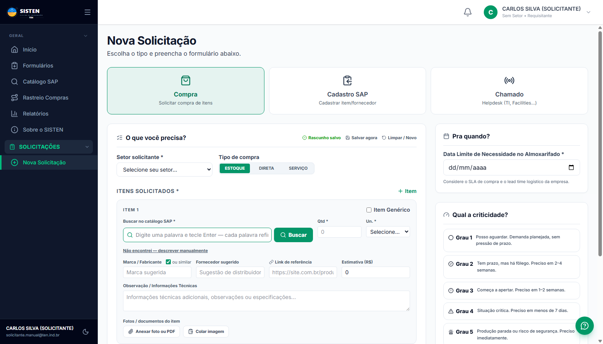
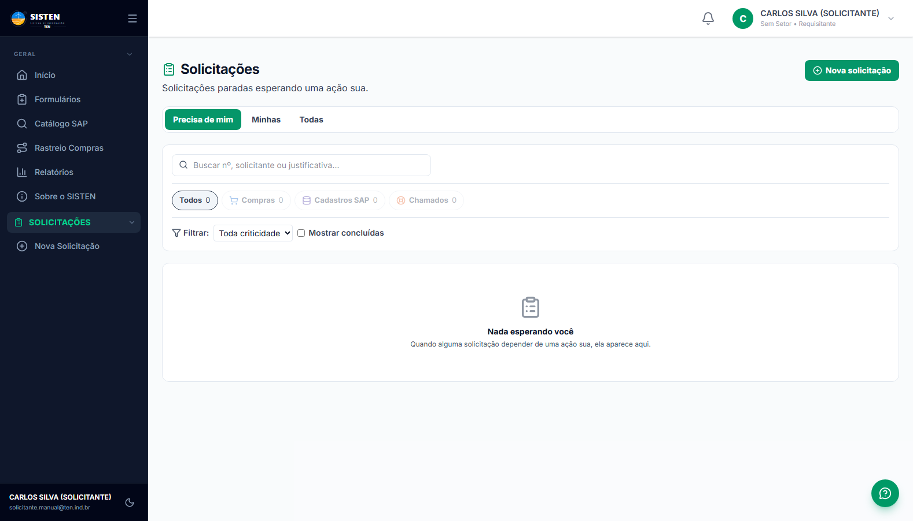
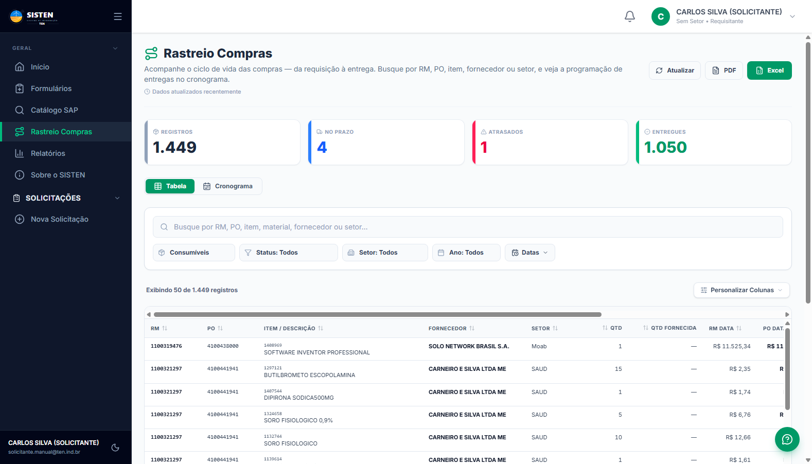
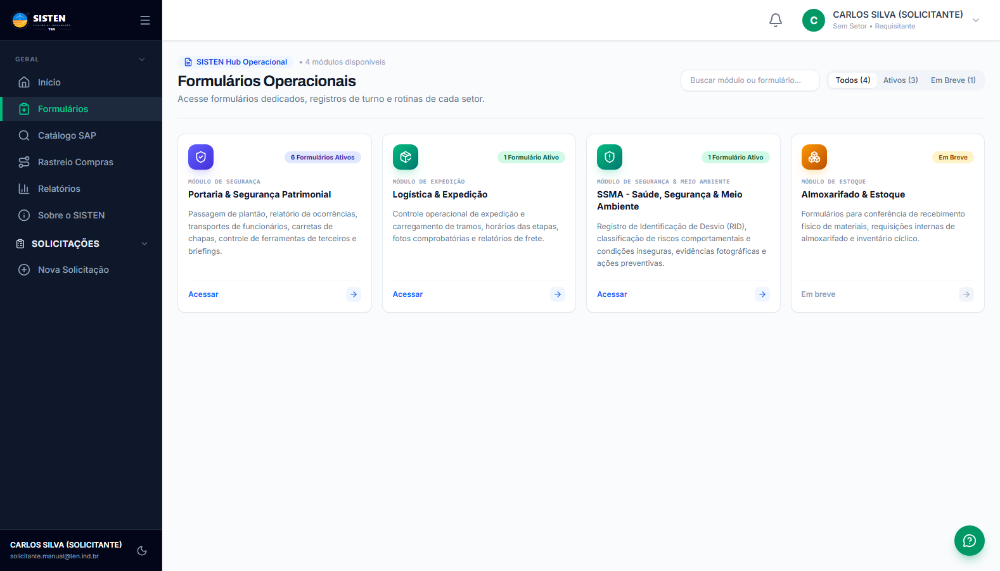
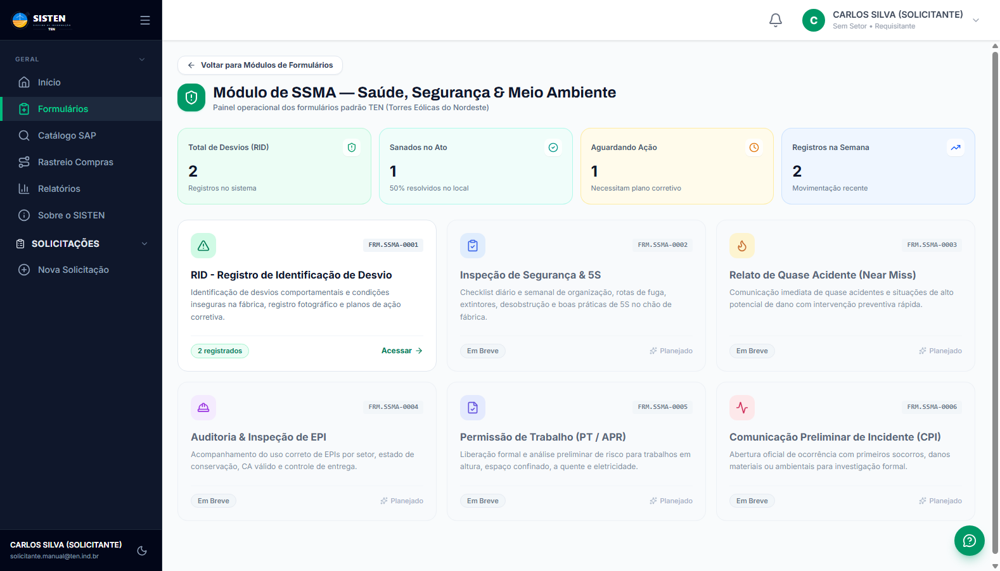

Passo a passo detalhado para compra de materiais com ou sem código SAP, contratação de serviços e chamados de suporte.
Pesquisa ágil no banco de dados corporativo e checagem de saldo imediato no Almoxarifado central.
Visibilidade total da emissão da PO pelo comprador até o transporte, nota fiscal e chegada física na fábrica.
Emissão simplificada do RID de Segurança (SSMA), solicitações de portaria e autorizações operacionais.
O SISTEN (Sistema de Informação TEN) é a plataforma integrada corporativa das Torres Eólicas do Nordeste para gestão unificada de suprimentos, compras, catálogo de materiais, almoxarifado, helpdesk, formulários operacionais e rastreabilidade logística.
Este manual foi elaborado para orientar você, colaborador solicitante, em todas as etapas do seu dia a dia na fábrica ou escritório — desde a identificação da sua necessidade operacional até o recebimento físico do item no almoxarifado.
O solicitante é o responsável por iniciar a cadeia de suprimentos. Um pedido bem preenchido, com especificações claras e justificativa sólida, reduz em até 70% o tempo total de compra e elimina atrasos por dúvidas do comprador ou erros de cotação.
Verifique sempre se o material já existe no catálogo SAP e se há saldo disponível no estoque antes de pedir nova compra.
Informe onde o material será aplicado (máquina, obra, setor) e o impacto caso o item não esteja disponível na data.
Consulte periodicamente a aba "Precisa de Mim" na Central de Solicitações para responder dúvidas técnicas dos compradores.
Acompanhe o Rastreio de Compras para saber o dia em que o caminhão descarregará o item no Almoxarifado central.
O acesso ao SISTEN é individual e protegido por credenciais corporativas. Ao acessar a aplicação, você verá a tela de boas-vindas com a imagem da unidade TEN de Jacobina/BA.
seu.nome@ten.ind.br ou seu.nome@agnet.com.br).Após a autenticação bem-sucedida, você é direcionado à tela Início, personalizada com o seu nome, cargo e setor.

Destaques da Tela Início:
Antes de redigir qualquer solicitação de compra, a primeira etapa recomendada é consultar o Catálogo de Materiais SAP. Essa consulta garante o uso do código correto (8 dígitos) e permite conferir se o material já está disponível nas prateleiras do Almoxarifado Central.

A barra de busca do SISTEN utiliza um mecanismo de busca por palavras-chave inteligentes. Para encontrar itens com rapidez:
PARAFUSO SEXTAVADO M12 ou LUVAS VAQUETA.10024560), digite-o diretamente na barra de pesquisa.| Coluna / Campo | O que indica? | Orientação para o Solicitante |
|---|---|---|
| CÓDIGO SAP | Código oficial de 8 dígitos cadastrado no SAP da TEN. | Copie este código para colar no formulário da sua solicitação de compra. |
| DESCRIÇÃO SAP | Texto técnico padronizado com medidas, normas e especificações. | Verifique se atende com exatidão a sua necessidade de campo. |
| UNIDADE (UN) | Unidade de controle de estoque (PC, CX, PAR, ROLO). | Sua solicitação deve ser feita sempre na mesma unidade oficial do item. |
| STATUS SAP | Indica se o material está Ativo, Bloqueado ou Obsoleto. | Itens bloqueados necessitam de liberação prévia com a equipe de Suprimentos. |
Para abrir um novo pedido, clique no menu lateral em Nova Solicitação ou no botão "+ Nova Solicitação" no topo da tela.

No topo da tela, você deve selecionar uma entre as 3 opções disponíveis:
| Campo | Obrigatório? | Como preencher? |
|---|---|---|
| Setor Solicitante | SIM | Selecione o seu setor (ex.: Operações, Qualidade, Manutenção, SSMA, Facilities). Esse setor define o centro de custo de cobrança. |
| Tipo de Compra | SIM | Escolha entre ESTOQUE (itens de almoxarifado), DIRETA (aplicação imediata) ou SERVIÇO (mão de obra). |
| Código / Busca SAP | RECOMENDADO | Digite o nome ou código e tecle Enter ou clique em "Buscar" para selecionar o item na janela de catálogo integrada. |
| Item Genérico | OPÇÃO | Marque este checkbox apenas caso o item não exista no SAP. Nesse caso, digite uma descrição minuciosa e anexe foto/orçamento. |
| Quantidade & Unidade | SIM | Informe o volume exato necessário (ex.: 10) e a unidade correspondente (ex.: UN, PC, KG). |
| Fabricante / Referência | OPCIONAL | Indique a marca de preferência ou cole o link do site do fabricante (ex.: catálogo técnico ou distribuidor autorizado). |
| Justificativa Técnica | SIM | Explique o motivo da compra e onde o material será aplicado. Exemplo: "Substituição preventiva dos rolamentos da esteira 03 da linha de solda." |
| Anexar Foto ou PDF | RECOMENDADO | Anexe cotações recebidas, orçamentos, desenhos técnicos ou fotos da peça danificada para facilitar a compra. |
Para equilibrar as prioridades de compra de toda a fábrica, o SISTEN conta com uma régua de criticidade em 5 níveis no painel lateral do formulário. A escolha correta do grau garante que demandas urgentes recebam tratamento imediato sem prejudicar as compras planejadas.
| Grau | Classificação | Quando utilizar? | Prazo Sugerido |
|---|---|---|---|
| Grau 1 | Planejada | Demandas rotineiras, reposição periódica sem pressão de prazo. | Acima de 30 dias |
| Grau 2 | Normal com Fôlego | Necessidade de médio prazo com folga para cotação e negociação. | De 2 a 4 semanas |
| Grau 3 | Atenção / Começa a Apertar | Estoque próximo ao ponto de reposição ou evento agendado. | De 1 a 2 semanas |
| Grau 4 | Situação Crítica | Risco iminente de impacto na produção ou parada programada próxima. | Menos de 7 dias |
| Grau 5 | Emergência / Parada | Produção já parada ou risco grave e imediato à integridade física/segurança. | Imediato (Urgente) |
No campo "Pra quando? Data Limite de Necessidade no Almoxarifado", indique a data em que o material precisa impreterivelmente estar fisicamente guardado e liberado para retirada.
Lembre-se sempre de considerar a composição do tempo total (Lead Time):
O SISTEN conta com o recurso "Rascunho Salvo". Caso você esteja preenchendo uma solicitação extensa e precise pausar ou fechar o navegador, seus dados são preservados automaticamente na memória local, permitindo retomar exatamente de onde parou ao reabrir a tela.
A Central de Solicitações (menu Solicitações) é o cockpit onde você gerencia todas as suas requisições, verifica o andamento em tempo real e interage diretamente com os compradores.

Ao clicar sobre qualquer solicitação na lista, o painel lateral abre exibindo a linha do tempo completa e os dados dos itens:
| Status | Etapa Atual | O que significa? |
|---|---|---|
| Aguardando Aprovação | Gestor Imediato | A solicitação aguarda o aceite do gestor do centro de custo para seguir a compras. |
| Em Cotação | Comprador | O setor de Suprimentos está consultando fornecedores e coletando propostas de preço. |
| Pedido Emitido (PO) | Fornecedor | O Pedido de Compra foi fechado e enviado ao fornecedor para faturamento e despacho. |
| Em Trânsito | Transportadora | A mercadoria foi despachada com Nota Fiscal e está em rota com destino a Jacobina/BA. |
| Recebido / Concluído | Almoxarifado | O material foi conferido fisicamente e deu entrada no estoque (MIGO gerada). |
| Rejeitado | Cancelada | O gestor ou comprador reprovou o pedido, registrando o motivo formal no histórico. |
O Rastreio Compras (menu Rastreio Compras) oferece ao solicitante total transparência sobre o andamento dos pedidos colocados no SAP da TEN, eliminando a necessidade de ligar para o setor de compras ou para o almoxarifado para saber se uma peça chegou.

Logo ao abrir a página, quatro cards coloridos resumem a situação das compras:
Na barra de pesquisa da tabela, você pode localizar sua compra através de qualquer um dos seguintes dados:
1100319476.4100438000.SOLO NETWORK, CARNEIRO E SILVA.DIPIRONA ou código 1407544.Além da tradicional visualização em Tabela, você pode clicar na aba Cronograma. O sistema desenhará um gráfico visual no calendário mostrando as semanas em que cada fornecedor está programado para entregar cargas na portaria da TEN.
O SISTEN centraliza formulários operacionais das áreas de apoio à fábrica. No menu Formulários, você tem acesso aos módulos de Segurança Patrimonial (Portaria), Logística & Expedição e SSMA.

A segurança é o valor prioritário na TEN. O formulário RID (Registro de Identificação de Desvio - FRM.SSMA-0001) permite que qualquer colaborador reporte desvios comportamentais, condições inseguras no chão de fábrica e oportunidades de melhoria preventiva.

Mais de 80% dos materiais de uso corrente na fábrica já possuem código SAP cadastrado. Usar o código reduz o prazo pela metade.
Para peças usinadas, ferramentas especiais ou cabos elétricos, fotos da placa de identificação evitam erros na compra.
Evite usar Criticidade Grau 4 ou 5 para itens previsíveis. O frete de emergência onera os custos e pode atrasar o fluxo padrão.
Informações como "Troca na esteira 02" ou "EPI para novos contratados" facilitam a aprovação rápida pelo seu gestor.
Sim! Enquanto a solicitação estiver com status "Aguardando Aprovação", você pode abrir o pedido e editar itens ou anexos. Se ela já tiver sido aprovada e estiver com o comprador, envie uma mensagem pelo campo de comentários interno.
Selecione o canal "Cadastro SAP" no topo da tela de Nova Solicitação para solicitar a criação do código ao time de cadastros, ou marque o checkbox "Item Genérico" na solicitação de compra descrevendo a marca e modelo.
Na tela Rastreio Compras, o status do item mudará para "Entregue" com a data de entrada (MIGO) preenchida. Você também receberá um alerta na sua aba de Notificações da tela Início.
| Área de Atendimento | Responsável / Ramal | Tipo de Dúvida |
|---|---|---|
| Suprimentos & Compras | Equipe de Compradores TEN | Dúvidas de prazos, cotações e marcas alternativas. |
| Almoxarifado Central | Equipe de Recebimento Físico | Saldo em prateleira, conferência de carga e retirada. |
| Suporte Técnico SISTEN (TI) | Helpdesk Interno / ramal TI | Acesso, primeiro login, recuperação de senha e bugs. |